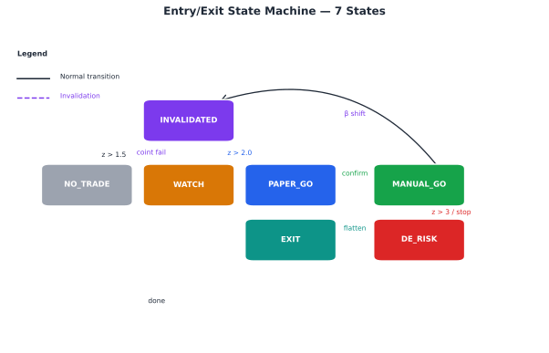
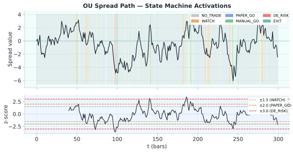
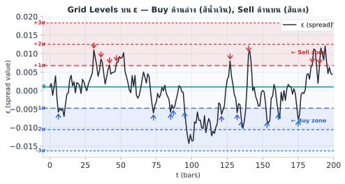

Statistical Arbitrage · บทที่ 11
Entry/Exit State Machine:
State machine ควบคุมทุก transition — ไม่มี ad-hoc decision
แก่นของบทนี้ — อ่านก่อน
แทนที่จะตัดสินใจ "เข้า/ออก" แบบ ad-hoc ทุกครั้ง ให้ออกแบบ State Machine ที่กำหนด state ทั้งหมดและเงื่อนไขการ transition อย่างชัดเจน — ป้องกัน race condition, double-entry, และ logic กระจัดกระจาย
$$z_t > 2.0 \Rightarrow \text{WATCH} \to \text{PAPER\_GO} \to \text{MANUAL\_GO} \qquad |z_t| < 0.5 \Rightarrow \text{EXIT}$$
11.1 ทำไมต้องมี State Machine
ในระบบ trading จริง สิ่งที่เกิดขึ้นพร้อมกันมีมาก: ราคาอัปเดตทุก millisecond, สัญญาณ cointegration เปลี่ยน, regime model อัปเดต, manual approval เข้ามา — ถ้าไม่มีโครงสร้างที่ชัดเจน โค้ดจะกลายเป็น chaos
ปัญหาที่พบบ่อยเมื่อไม่มี State Machine
Race condition: เปิด position สองครั้งเพราะ signal มาพร้อมกันสองทางDouble-entry: ระบบ "ลืม" ว่า position เปิดอยู่แล้ว และเพิ่มขนาดซ้ำLogic กระจัดกระจาย: เงื่อนไข if/else กระจายทั่วโค้ด ไม่รู้ว่า "สถานะ" ปัจจุบันคืออะไรStop-loss ไม่ trigger: เช็คเงื่อนไขผิด state ทำให้ stop-loss ไม่ทำงาน
ข้อดีของ State Machine
ทุก transition ต้องผ่านเงื่อนไขที่กำหนดไว้ล่วงหน้า — ไม่มีการข้ามขั้นตอน
ณ ทุกจังหวะ ระบบรู้ว่าอยู่ใน state ไหน และ action ที่ valid มีอะไรบ้าง
ง่ายต่อการ log, debug, และ audit trail
สามารถ test แต่ละ transition แยกกันได้
11.2 State Diagram — 7 States และ Transitions
State machine ของเราประกอบด้วย 7 states หลัก แต่ละ state มี transitions ที่ชัดเจน:

NO_TRADE
ไม่มี position
WATCH
กำลังเฝ้าดู
PAPER_GO
รอ approval
MANUAL_GO
position เปิดอยู่
DE_RISK
ปิดขา
EXIT
ปิดครบแล้ว
INVALIDATED
cointegration หาย
|z|>1.5
coint OK
|z|>2.0
regime=Normal
manual_ok
หรือ auto
z กลับ
หรือ stop-loss
legs_closed()
!coint
regime=Broken
reset → NO_TRADE
Legend
normal transition
de-risk trigger
invalidation (any state)
reset loop
State diagram: 7 states พร้อม transition conditions — arrows แสดง z-score thresholds ที่กระตุ้น state change แต่ละขั้น
11.3 Transition Conditions Table
ตารางด้านล่างสรุป transition ทั้งหมด พร้อมเงื่อนไขและ action ที่เกิดขึ้น:
State ปัจจุบัน เงื่อนไข Next State Action ที่ทำ NO_TRADE |z| > 1.5 AND coint_ok AND regime = Normal WATCH บันทึก z_watch, ตั้ง alert WATCH |z| > 2.0 AND coint_ok AND regime = Normal PAPER_GO บันทึก entry_zscore, ส่ง paper signal WATCH !coint_ok OR regime = Broken INVALIDATED ล้าง watch state, log เหตุผล WATCH |z| < 1.0 (signal หาย) NO_TRADE reset กลับ PAPER_GO manual_ok = True (หรือ auto_mode) MANUAL_GO ส่ง order จริงทั้งสองขา MANUAL_GO z × entry_sign < 0.5 OR stop_loss_hit() DE_RISK เริ่มปิด position ทีละขา MANUAL_GO !coint_ok OR regime = Broken INVALIDATED ปิด position ทันที (emergency) DE_RISK legs_closed() = True EXIT บันทึก P&L, ล้าง state EXIT / INVALIDATED หลัง cooldown NO_TRADE reset ทุก field
ทำไม 1.5 และ 2.0? — ค่าเหล่านี้ไม่ใช่กฎตายตัว
Threshold 1.5 (WATCH) และ 2.0 (PAPER_GO) เป็น จุดเริ่มต้น ที่มาจาก breakeven formula ใน §3.4:
z_entry ≥ z_exit + 2 × fee / σ_stat
ด้วยค่าทั่วไป fee≈0.06%, σ_stat≈0.08%, z_exit≈0.5 → z_entry ≈ 2.0 พอดี ค่า 1.5 ใช้เป็น early-warning (WATCH) ให้ระบบเตรียมตัวก่อน trigger จริง
สภาพแวดล้อม WATCH threshold PAPER_GO threshold เหตุผล Fee สูง (>0.10%) 1.8–2.0 2.5–3.0 ต้องการ spread กว้างขึ้นเพื่อคุ้มค่า fee ปกติ (0.04–0.10%) 1.5 2.0 ค่า default ที่ใช้ในหนังสือนี้ Fee ต่ำ (<0.03%) 1.2–1.3 1.5–1.7 เข้าได้บ่อยขึ้น เพราะ fee ไม่ค่อย hurt อยากเทรดบ่อย (high turnover) 1.0–1.2 1.5 ยอมรับ expected profit ต่อ trade น้อยลง แต่จำนวน trade มากขึ้น
แนวทางการ calibrate: คำนวณ fee/σ_stat ของ pair จริง → ใส่ใน formula → ได้ z_entry ทางทฤษฎี → ทดสอบใน walk-forward (§3.9) ก่อน deploy จริง อย่า copy ค่า 1.5/2.0 ไปใช้โดยไม่ตรวจสอบ
11.4 Pseudo-code: StateMachine Class
โค้ดด้านล่างแสดงโครงสร้างหลักของ State Machine — ทุก transition อยู่ใน method เดียว update() เพื่อความชัดเจน:
class StateMachine:
def __init__(self):
self.state = "NO_TRADE"
self.entry_zscore = None
def update(self, zscore, regime, coint_ok, manual_ok=False):
if self.state == "NO_TRADE":
if abs(zscore) > 1.5 and coint_ok and regime == "Normal":
self.state = "WATCH"
elif self.state == "WATCH":
if abs(zscore) > 2.0 and coint_ok and regime == "Normal":
self.state = "PAPER_GO"
self.entry_zscore = zscore
elif not coint_ok or regime == "Broken":
self.state = "INVALIDATED"
elif abs(zscore) < 1.0:
self.state = "NO_TRADE" # signal หาย reset
elif self.state == "PAPER_GO":
if manual_ok:
self.state = "MANUAL_GO"
elif self.state == "MANUAL_GO":
entry_sign = 1 if self.entry_zscore > 0 else -1
if zscore * entry_sign < 0.5 or stop_loss_hit():
self.state = "DE_RISK"
elif not coint_ok or regime == "Broken":
self.state = "INVALIDATED"
elif self.state == "DE_RISK":
if legs_closed():
self.state = "EXIT"
return self.state
หมายเหตุสำคัญเกี่ยวกับโค้ด
entry_sign บอกทิศทาง (1 ถ้า entry z บวก, −1 ถ้าลบ): ถ้า entry ที่ z = +2.3 → รอให้ z กลับมาต่ำกว่า +0.5stop_loss_hit() ควร implement แยกต่างหาก เช็คทั้ง unrealized P&L และ z-score absolutelegs_closed() เช็คว่าทั้งสองขา (long และ short) ได้รับ fill ครบแล้วใน production ควรเพิ่ม persistence — บันทึก state ลง DB เพื่อกู้คืนได้หลัง crash
11.5 Running Example: Bybit↔Lighter BTC Perp
Running Example: Sequence ของ State Transitions จริง
สมมติเวลา 14:00 น. วันหนึ่ง ระบบเริ่มตรวจพบ signal ใน Bybit↔Lighter BTC perp pair:
เวลา z-score Event State เก่า State ใหม่ 14:00 0.8 ปกติ ไม่มีสัญญาณ NO_TRADE NO_TRADE 14:15 1.7 |z| > 1.5, coint OK, regime Normal NO_TRADE WATCH 14:22 2.3 |z| > 2.0, confirm signal WATCH PAPER_GO 14:25 2.1 trader กด approve (manual_ok=True) PAPER_GO MANUAL_GO 14:25 2.1 ส่ง order: Short Bybit, Long Lighter MANUAL_GO MANUAL_GO 15:10 0.4 z < 0.5 (mean reversion สำเร็จ) MANUAL_GO DE_RISK 15:12 0.3 ปิดทั้งสองขาครบ (legs_closed) DE_RISK EXIT 15:20 — หลัง cooldown 8 นาที EXIT NO_TRADE
ผลลัพธ์ของ Trade นี้
Entry: z = +2.3 (Short Bybit ที่แพง, Long Lighter ที่ถูก)หมายเหตุ: threshold เข้า trade คือ z = 2.0 — ค่า 2.3 คือ z จริง ณ ที่ fill (realized z) ที่ "เกิน" 2.0 พอดี ไม่ใช่ threshold ตัวที่สอง
การ Visualize Sequence บน z-score Timeline

เวลา
z
+2.0
+1.5
+0.5
NO_TRADE
WATCH
PAPER_GO
MANUAL_GO
DE_RISK
EXIT
z=1.7
z=2.3
z=0.4
OU spread path (บน) พร้อม state color overlay: grey=NO_TRADE, amber=WATCH, blue=PAPER_GO, green=MANUAL_GO, red=DE_RISK, teal=EXIT | z-score timeline (ล่าง)
11.6 Grid Trading บน OU Process
Key Idea
Grid Trading บน Raw Price เสี่ยงเรื่อง "กรอบแตก" เมื่อตลาดเป็นเทรนด์. แต่ถ้าวาง Grid บน ε ที่พิสูจน์แล้วว่า Mean-Revert (OU Process) — กรอบจะแตกก็ต่อเมื่อ Cointegration พัง ซึ่งเรามี Hamilton Filter คอยตรวจแล้ว
Grid บน Raw Price Grid บน OU Process (ε) เสี่ยงกรอบแตก สูง — เมื่อตลาด trend ต่ำ — ε mean-reverts โดยนิสัย Market-Neutral ❌ — เจ็บถ้า BTC พุ่ง/ดิ่ง ✅ — β hedge ปิดความเสี่ยงทิศทาง Grid Step คำนวณยังไง อิงจาก % หรือ ATR อิงจาก σ_stat (มีสถิติหนุนหลัง) Hard Stop กำหนดยาก ชัดเจน — Broken regime หรือ ADF p>0.1
การคำนวณ Grid Levels
Grid levels คำนวณจาก:
Grid levels: θ ± k × σ_stat สำหรับ k = 1, 2, 3, ...
Grid step ขั้นต่ำ: step > total_friction_cost (ดูรายละเอียดใน ch19 )
ตัวอย่าง: θ = 0.001, σ_stat = 0.003, step = 1σ
Buy levels: ε < 0.001 − 0.003 = −0.002 (z < −1)
Strong buy: ε < −0.004 (z < −2)
Sell levels: ε > 0.004 (z > 1)
Minimum step (จาก ch19 ): 19.6 bps taker → ต้องให้แต่ละ step ให้ gross ≥ 20 bps

Grid levels บน ε: Buy ที่ด้านล่าง (สีน้ำเงิน), Sell ที่ด้านบน (สีแดง) — ε mean-reverts กลับหา θ เสมอ
Pseudo-code: OUGrid Class
class OUGrid:
def __init__(self, theta, sigma_stat, levels=3, step_multiplier=1.0):
self.theta = theta
self.step = sigma_stat * step_multiplier
self.levels = levels
def get_grid_action(self, epsilon, adf_pvalue=None, regime_probs=None):
# Hard stop: close all grid if cointegration breaks
if adf_pvalue is not None and regime_probs is not None:
if not self.is_cointegration_healthy(adf_pvalue, regime_probs):
return "CLOSE_ALL_GRID"
z = (epsilon - self.theta) / self.step
level = int(abs(z)) # which grid level crossed
if level >= self.levels:
return "HARD_STOP" # z >= max_levels → too far, may be broken
if z < -0.5: # below θ → buy (long spread)
return f"BUY_LEVEL_{level}"
elif z > 0.5: # above θ → sell (short spread)
return f"SELL_LEVEL_{level}"
else:
return "HOLD"
def is_cointegration_healthy(self, adf_pvalue, regime_probs):
# Close all grid if cointegration fails
return adf_pvalue < 0.05 and regime_probs['broken'] < 0.5
Grid Trading vs State Machine
Grid Trading เป็น parallel tracks — สามารถมีหลาย position พร้อมกันได้ตามแต่ละ level ที่ถูก trigger ต่างจาก State Machine ใน Ch.11 ที่เป็น sequential (1 position ต่อครั้ง และต้องรอ EXIT ก่อนเปิดใหม่) Grid เหมาะกับพอร์ตที่มีทุนมากพอรองรับหลาย levels พร้อมกัน
ความเสี่ยงของ Grid Trading
ความเสี่ยงของ Grid คือการสะสม position ไปเรื่อยๆ ถ้า ε ไม่กลับ → ต้องตั้ง max_levels และ cointegration health check ทุก bar ถ้า ADF p-value > 0.1 หรือ regime = Broken → ปิด grid ทั้งหมดทันที
Running Example: Bybit↔Lighter — Grid บน OU Process
θ = 0.001 (0.1%), σ_stat = 0.003 (0.3%), grid step = 1σ
Total friction ≈ 20 bps (ดู ch19 ) → gross per step = 0.3% = 30 bps > 20 bps ✅
Grid levels: BUY ที่ z < −1 (ε < −0.002), BUY+++ ที่ z < −2 (ε < −0.005), SELL ที่ z > 1
ใน 30 วัน: grid triggered 47 ครั้ง, avg hold 5.2h, avg gross/trade = 28 bps, net = 8 bps (หลัง friction)
โจทย์ 11.4 — Grid Step ขั้นต่ำ
ถ้า σ_stat = 0.004 และ total friction = 20 bps — กี่ sigma ต่อ step จึงจะทำกำไรได้? (ใช้ 1% notional per step)
ดูคำตอบ
คำตอบ: gross = step_size × notional
step = 1σ = 0.4% = 40 bps > 20 bps ✅ → 1σ step ใช้ได้
ถ้า friction = 35 bps ต้องใช้ step ≥ 35/40 = 0.875σ → ปัดขึ้นเป็น 1σ
บนโต๊ะจริง — State Machine ใน Production
Cointegration gate: ก่อนให้ transition จาก NO_TRADE → WATCH ต้อง check p-value ADF < 0.05 และ β stability (|β_t − β_{t-30}| < 0.15) ก่อนทุกครั้งPAPER_GO → MANUAL_GO manual review: 30 วันแรกของแต่ละ pair ต้องมีคน approve ก่อน auto-transition; เริ่ม auto หลังผ่าน 10 paper trades ที่ Sharpe > 0.8Cooldown หลัง INVALIDATED: รอ 4 ชั่วโมงก่อน re-enter pair เดิม — ป้องกัน re-enter ทันทีหลัง cointegration failState log ทุก transition: บันทึก timestamp, z-score, regime posterior, β ณ วันที่ transition เพื่อ post-mortem
คณิตที่พัง — เมื่อ State Machine พัง
Cointegration break → infinite signal: ถ้า cointegration แตกแต่ไม่มี gate, state machine จะ trigger WATCH/PAPER_GO ทุก bar เพราะ spread drift ห่างจาก old mean ตลอดเวลา — loss ไม่มีที่สิ้นสุด7 states อาจไม่พอ: pairs ที่มี liquidity หลาย regime (weekday vs weekend, pre/post funding) ต้องการ sub-states; ไม่งั้น MANUAL_GO อาจ fire ในช่วงที่ spread ไม่ stationary จริงๆTransition threshold ตายตัว: z > 2.0 ที่ calibrate ในช่วง low-vol จะ over-trigger ในช่วง high-vol — ควรใช้ GARCH z-score แทน raw z ใน state conditions
11.7 เศรษฐศาสตร์ของ Stop บน Mean Reversion
Transition table ใน §11.3 ใช้ stop_loss_hit() เป็น condition ทั่วไป — ในทางปฏิบัติ trader ส่วนใหญ่ implement เป็นระยะราคา (เช่น |z|≥3) ตามตัวอย่างใน ch3 §3.4 แต่การตั้ง stop แบบระยะราคาบน OU process มีต้นทุนแฝงที่มักถูกมองข้าม
Stop แบบระยะราคา ตัด Position ตรงจุดที่ควรถือมากที่สุด
สำหรับ OU process แรงดึงกลับ (mean-reversion force) แปรผันตามระยะห่างจาก θ — ยิ่งไกล ยิ่งดึงแรง จุด 3σ จึงเป็นจุดที่ expected return สูงสุดพอดี การตั้ง stop ที่ระยะนี้จึงมักขายทิ้งตรงจุดที่ทฤษฎีบอกว่าควรถือ ไม่ใช่จุดที่ควรหนี
เข้าที่ 2σ: P(แตะ 3σ ก่อนกลับ θ) โดยทั่วไปอยู่ที่ 15-25% (ไม่ใช่ ~0.3% ที่เป็น unconditional probability ตาม ch3 §3.4 ) — นี่คือเหตุการณ์ที่เกิดบ่อยพอจะกิน edge ต่อไม้อย่างมีนัยสำคัญ เรียกต้นทุนนี้ว่า stop-loss tax ต้องรวมเข้า edge calculation เสมอ (สูตรเต็ม: ch19 §19.12 )
แยก Stop สองชนิดที่ทำหน้าที่ต่างกัน
Structural stop (ต้องออกทันที ไม่มีข้อยกเว้น): ADF test fail ใน rolling window (
ch5 ), θ shift ที่ regime filter ตรวจพบ (
ch9 ), funding/carry structure เปลี่ยนถาวร
Price stop (ตั้งไกลพอ ≥4σ): ให้ trigger จาก break จริงเท่านั้น ไม่ใช่ excursion ปกติของ OU ที่ยังอยู่ในกรอบทฤษฎี
# เพิ่ม time-stop ควบ — "ช้าเกิน" คือหลักฐานของ break ที่ดีกว่า "ไกลเกิน"
time_stop = P75 ของ first-passage time distribution (ดู ch19 §19.11)
if excursion_z >= 4.0 :
action = "STRUCTURAL_STOP — ออกทันที"
elif holding_time > time_stop and not reverting:
action = "TIME_STOP — น่าสงสัยว่า break แล้ว"
else :
action = "HOLD — ยังอยู่ในกรอบ OU ปกติ"
เช็คด่วน
Backtest ควรรายงาน % ของ trade ที่จบด้วย price stop แยกจาก structural stop และ normal exit — ถ้า price stop เกิน ~10% ของ trade ทั้งหมด แปลว่ากำลังจ่าย stop-loss tax หนักเกินไป ให้ทบทวน threshold (ขยับจาก 3σ เป็น 3.5-4σ) แทนที่จะยอมรับว่า "เป็นแบบนี้ปกติ"
11.8 Leg-Cut Temptation — จิตวิทยาที่ทำลายสิ่งที่โมเดลสร้าง
State machine ทั้งบทนี้ออกแบบให้ position เป็นคู่เสมอ (เปิดพร้อมกัน ปิดพร้อมกัน) — แต่ dashboard ของแต่ละ venue มักโชว์ PnL แยกขา ("ขา A +$650 / ขา B −$800") ซึ่งกระตุ้นพฤติกรรมที่ไม่มีอยู่ใน state diagram ของ §11.2 เลย
"เก็บกำไรขาที่บวกก่อน" = เปลี่ยน Arb เป็น Directional Bet ตรงจุดที่แย่ที่สุด
ตอน spread วิ่งสวนนานกว่า half-life ที่คำนวณไว้ (ซึ่งเป็นเรื่องปกติ — half-life คือค่ากลาง ไม่ใช่เพดาน) แรงกระตุ้นทางจิตวิทยาคือ "ล็อกกำไรขาบวกก่อน เดี๋ยวขาลบเด้งค่อยปิด" — ผลคือเหลือขาเดียว = position ทิศทางเปล่าๆ ที่ไม่เคยผ่านการอนุมัติจาก state machine เลย และมักเกิด ณ จุดที่ spread ยืดไกลที่สุด (2.5-3σ) ซึ่งคือจุดที่ expected reversion แรงที่สุดพอดี (เหมือนปัญหาเดียวกับ §11.7 ) — พอ spread revert กลับจริงตามที่โมเดลทำนาย ขาที่เหลือ (ปิดไม่ครบ) จะขาดทุนซ้ำอีกรอบ
ตัวอย่าง: ต้นทุนของการตัดขาเดียว
ถือ spread ที่ −2.8σ มา 12 วัน (τ½ = 4 วัน — เกิน 3×τ½ แล้ว แต่ยังไม่ break ตาม §11.7)
ถ้าปิดขากำไรตอนนี้ (leg-cut):
→ คืนถัดมา spread revert 1.5σ ตามที่ OU ทำนาย
→ ขาที่เหลือ (ทิศทางเปล่า) ขาดทุนเพิ่ม −$1,900
ถ้าถือครบสองขาตาม state machine (หรือ time-stop ปิดพร้อมกันตาม §11.7):
→ ทั้ง position ได้ +$400 (ตามที่โมเดลออกแบบไว้)
วิธีป้องกัน — สร้างระบบที่กันมือมนุษย์ออกจากจุดอ่อนไหวที่สุด
กติกาเหล็ก: spread เข้าเป็นคู่ ออกเป็นคู่เสมอ — ปิดขาเดียวทำได้กรณีเดียวคือ emergency hedge ตาม playbook ch20 (venue ล่ม/technical failure) ไม่ใช่เพราะ "รู้สึกว่าควร"ซ่อน PnL รายขา: dashboard ควรโชว์เฉพาะ ε, z, และ spread PnL รวม — การเห็น PnL แยกขาคือสิ่งที่กระตุ้น loss aversion แบบรายขาซึ่งไม่มีเหตุผลเชิงกลยุทธ์รองรับมี "ทางออกตอนทรมาน" อยู่แล้วในระบบ: time-stop จาก §11.7 (P75 ของ first-passage time) ทำให้มีจุดจบที่กำหนดไว้ล่วงหน้า ไม่ต้องด้นสดตอนกดดันที่สุด
11.9 แบบฝึกหัด
โจทย์ 11.1 — Transition ที่ถูกต้อง
ระบบอยู่ใน state MANUAL_GO กับ entry_zscore = +2.5 (Short Bybit, Long Lighter)ถาม: ระบบควร transition ไป state ไหน? เพราะเหตุใด?
ดูคำตอบ
Transition ไป: DE_RISK
เหตุผล: entry_sign = 1 (entry_zscore = +2.5 > 0); z × entry_sign = 0.3 × 1 = 0.3 ซึ่ง < 0.5
เงื่อนไข zscore * entry_sign < 0.5 เป็นจริง → transition ไป DE_RISK
ความหมาย: spread ได้ mean-revert กลับมาใกล้ค่ากลางแล้ว (จาก 2.5σ เหลือ 0.3σ) ถึงเวลาปิด position
cointegration OK ไม่เปลี่ยนแปลงผล เพราะเงื่อนไข z กลับมาถึงก่อน
โจทย์ 11.2 — Emergency Invalidation
ระบบอยู่ใน state MANUAL_GO กำลัง hold position (Short Bybit, Long Lighter)ถาม: ระบบควรทำอะไร? อธิบาย action และเหตุผล
ดูคำตอบ
Action: Transition ไป INVALIDATED ทันที และปิด position เป็น emergency
เงื่อนไข not coint_ok เป็นจริง → transition จาก MANUAL_GO → INVALIDATED
เหตุผลสำคัญ: ถ้า cointegration หาย หมายความว่าสมมติฐานพื้นฐานของ strategy (ทั้งสองราคา mean-revert ด้วยกัน) ไม่เป็นจริงอีกต่อไป
การ hold position ต่อไปจะเสี่ยงมาก เพราะไม่มีกลไกที่จะทำให้ spread กลับมา
Action: ปิดทั้งสองขาในราคาตลาดทันที แม้จะขาดทุน — นี่คือ priority ด้าน risk management
โจทย์ 11.3 — ออกแบบ Anti-Thrashing Logic
ปัญหา: z-score วนอยู่ที่ 1.45–1.55 ทำให้ระบบ transition NO_TRADE → WATCH → NO_TRADE ซ้ำๆ ทุก 2 นาที (เรียกว่า "thrashing")ถาม: ออกแบบ modification ใน StateMachine เพื่อแก้ปัญหานี้ โดยไม่เปลี่ยน threshold หลัก
ดูคำตอบ
วิธีแก้: เพิ่ม cooldown timer และ hysteresis
1. Cooldown: หลัง transition จาก WATCH กลับไป NO_TRADE ให้รอ min_watch_cooldown (เช่น 10 นาที) ก่อนจะ enter WATCH อีกครั้ง
2. Hysteresis: เพิ่ม counter watch_count — ต้องเห็น |z| > 1.5 ติดต่อกัน N bars (เช่น 3 bars) จึง transition ไป WATCH
def __init__(self):
self.state = "NO_TRADE"
self.last_watch_exit = None
self.watch_streak = 0 # bars ติดต่อกันที่ |z| > 1.5
def update(self, zscore, regime, coint_ok, ...):
if self.state == "NO_TRADE":
cooldown_ok = (now() - self.last_watch_exit) > 600 # 10 min
if abs(zscore) > 1.5 and coint_ok and cooldown_ok:
self.watch_streak += 1
if self.watch_streak >= 3:
self.state = "WATCH"
else:
self.watch_streak = 0
หมายเหตุ: State Machine นี้ใช้ได้กับ F(·) อื่นเช่นกัน
state machine (ENTRY/HOLD/EXIT/STOP) ทำงานบน z-score ที่ normalize แล้ว จึงใช้ได้กับทุก F(·) โดยไม่ต้องปรับ logic — สิ่งที่เปลี่ยนคือ polling frequency: half-life ของ funding spread (ch13C ) สั้นกว่า log-price pair มาก ดังนั้น state machine ของ funding spread ต้อง poll ถี่กว่ามาก (นาทีแทนที่จะเป็นชั่วโมง/วัน) มิฉะนั้นจะพลาด window การ entry/exit ทั้งหมด
Ch.11 Entry/Exit State Machine | ต่อไป → Ch.12: Position Sizing
🏛️ ห้องสมุด Options & Arbitrage Statistical Arbitrage — เริ่มต้น